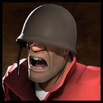
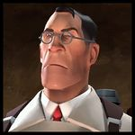

Using meme loadouts in Mann VS. Machine works!
It's not even that hard.
Soldier

If you feel like rocket launchers are for rookies:
Equip the Bison, and exclusively use the Bison.
Upgrade EVERYTHING On the Bison.
I mean EVERYTHING.
Shoot robots that are walking away from you for max damage; bonus points if they're giants.
Demoman

If your team's engineer either has no idea what he's doing or doesn't exist:
A clueless or nonexistent engineer means that all kinds of basic level enemies will rush by you and your team relatively unharmed. How do you solve this problem while also making your own team mad?
BE A DEMOKNIGHT.
Grab the Wee Booties/Bootlegger, Tide Turner, and the Half Zatoichi.
Focus on fully upgrading your sword first, starting with crits, then swing speed, and then damage. The health upgrades aren't needed, since the katana already comes with its own health on kill upgrade that HAS THE ABILITY TO OVERHEAL YOU.
After upgrading your sword, upgrade your demoman's running speed, jump height, charge regen, and, optionally, health regen.
Play on Mannhattan. The extra money will help you be less useless if you pick demoknight from wave one.
As a demoknight, you essentially play the same role as the spy, except you're louder and scarier. With the sword's damage upgrade fully maxed, you can destroy scout bots in one hit and normal heavy bots just as fast with a crit.
Use the crits you get from small bots to engage larger, tankier bots. More often than not, playing like this gets you the killing blow on those larger baddies.
Use your jump height to trimp to the front lines if you ever die.
If your team has an engineer and you get easily bored when your only job is to press MOUSE2 every few seconds:
Roleplay as an artillery cannon.
Equip the stock Grenade Launcher, the Chargin' Targe, and any melee of your choice. Good melee options include the pan, the ham, and the Eyelander.
Blow all your money on your Grenade Launcher, since it will be your main source of damage. Your main priotities are clip size, firing speed, reload speed, and projectile speed.
Use any excess funds to upgrade resistances to whatever robots are trying to mow down your team for that round.
Artillery Demo is simple: your job is to click on anything that runs off gasoline. The one hundred (or more, that's up to you) damage per pipe adds up surprisingly quickly, allowing you to 1v1 larger robots if you survive the encounter for long enough.
Engineer

If your team already has a heavy or other offensive class:
Hope you like shotguns, 'cause you're equipping the Frontier Justice, Short Circuit, and the Gunslinger.
Upgrade your Frontier justice first. Focus on increasing clip size, firing rate, and reloading speed. Eventully, You'll want this little mann to be fully upgaded.
After upgrading your shotgun, upgrade your running speed, jump height, and health regen.
Place your mini sentry anywhere around weaker bots. Destroy it once in a while to gain crits. Go for key picks as the fat Texan.
???
Profit.
Crap someone already picked engineer, what do?
Equip yourself with the Rescue Ranger, Gunslinger, and the PISTOL.
Upgrade your pistol's firing speed and clip size. You can eventually max out this gun.
Assuming the engineer put his dispenser in a helpful spot, put your dispenser near his base, giving him his own stash of metal and memes.
Mow down simps and soyboys with your pistol as if you were playing heavy, and stop every once in a while to assist the engineer who actually knows what game he's playing.
Deal a completly normal amount of damage for some nut with a pistol, and notice that you're getting many more killing blows than you thought you would.
Optionally, open a soundboard and play a sound of engineer burping in the game's voice chat after every frag.
Medic

If your team is dying a lot and you feel like engaging in a little trolling:
Try the slightly aggressive MVM medic!
Throw together a loadout with the Overdose, the Vaccinator, and the Ubersaw.
Upgrade your speed and jump height first, followed by Ubercharge rate, healing mastery, overheal expert, and Ubercharge duration. Mad milk syringes also help if you have no Boston boy or said boy is being a little, I dunno... useless.
Use the Vaccinator like you would in a standard game of TF2; use the resistance that's the most useful at the moment.
The memes begin when a teammate dies. Activating an Ubercharge on a dead teammate revives them instantly. The Vaccinator, funnily enough, has four whole Ubercharges.
Keep hitting your teammates with the instant revives. use your Ubersaw to constantly stay topped up on your uber. Use your Overdose to move away from or towards the front lines faster.
Laugh at the micromanaging scout on your team as he screams his manchild lungs out over your stupidly effective loadout.
BONUS TIP: Just to reiderate, the Ubersaw gives you 25% Uber with every hit. Because you're using the Vaccinator, you're always one melee hit away from reviving a dead teammate!
If your team isn't dying as much and you feel like engaging in a large amount of trolling:
Just go full battle medic!
Before trying this, ensure that another medic is on your team and is playing properly. Without one, your team wil practically be down a player.
Use the same loadout as before, that being the Overdose, Vaccinator, and the Ubersaw.
Dump all your money into your overdose. Mainly, you'll want mad milk syringes, then firing speed, then ammo capacity, then clip size.
Put at least 600 credits into your medigun's shield so you aren't as fragile as a moist tissue.
Upgrade your medic's run speed, jump height, and resistances to whatever's headed for your team during that round. Grabbing fire resistance isn't all that good of a choice, since good aim with your syringe gun practically cancels out afterburn.
You'll use the Overdose because the downside isn't all that applicable; a small percentage of an already small number is still a small number. Not to mention, with this playstyle, you'll be able to take full advantage of the speed boost, since you'll almost exclusively use your Overdose.
You won't be doing a lot of damage, so your main priority is drawing aggro. You always have four ubercharges ready to go at any time in case things get too spicy.
Your fast firing speed, combined with the pracitcally constant mad milk effect, makes you almost immortal so long as you can hit your shots and avoid burst damage. This mad milk also heals your teammates, which is a plus!
For added fun, you can pretend that your syringe gun actually shoots bees. The projectiles sure do feel like they're bees, not to mention that the idea of a big, hulking tank of a robot flailing about trying to not get stung is really funny.
Sniper

If you feel like your team isn't doing enough damage:
Enter the Jarate Black Belt.
Equip the Sydney Sleeper, Jarate, and Bushwacka.
Focus on upgrading your piss rifle with explosive headshot, reload speed, charge rate, and maximum ammo capacity.
Fully upgrade your piss recharge rate, slow down effect (if you have no scouts), and, if funds permit, upgrade the swing speed and health on kill for your Bushwacka.
Play like a normal sniper. The Jarate master is good because explosive headshots may only deal body-shot damage to the robot you hit, but ALL SURROUNDING BOTS TAKE FULL HEADSHOT DAMAGE.
On top of that, the surviving bot is now covered in piss, and will take mini-crits from all sources of damage.
Go for larger bots to maximize the Sleeper's effectiveness.
Not convinced? Throw jars at any weaker enemy bots (scouts, demoknights, or anyone who can be taken out in one melee crit). Pop a head or two afterwards, and go mad with your Bushwacka.
Remember, the Sydney Sleeper restores part of your already quickly regenerating Jarate. Use this to your advantage!
Wanna play Combo Sniper?:
Equip the Huntsman, the Jarate, and the Tribalman's Shiv.
Upgrade the recharge rate and slowing effect on your Jarate.
Max out the bleeding stat on your Huntsman, and max out swing speed on your Shiv.
Upgrade running speed, jump height, and, credits permitting, health regen.
Combo sniper is simple: throw your Jarate at one large(r) bot, and hit them with bleeding arrows or your Shiv.
Remember: You can still deal headshot damage, and bleeds can deal mini-crits when combined with Jarate.
Spy

Because simply picking the tiny backstabby man isn't silly enough:
Equip any knife of your choosing, along with the Dead Ringer.
Equip either the Ambassador or the Diamondback
Focus on spending all of your money on your revolver. Upgrade running speed and jump height in order to dodge projectiles.
Your main goal as the gun spy is to get the robots to aggro you. While you're drawing attention away from the rest of your team, dodge the robot's projectiles and pop them with your revolver.
Go through an entire match roleplaying as John Whick, a cowboy, or the Mysterious Stranger from Fallout. Whatever Trickstabs your pyro.